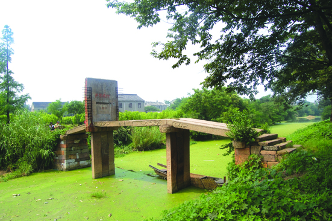

嘉兴市文物保护网 · 市级文物保护单位 · 2014-06-16 · 原文

国界桥位于嘉兴市秀洲区洪合镇洪合村7组，建于清嘉庆十六年（1811），系三孔无栏石板桥，南北横跨九里港。全长18.6米，桥面宽1.59米，由3块石板并列组成，单块石板最大跨度5.68米。东西有桥额“国界桥”，下桥柱上刻有桥联：西为“披莱远溯夫余泽，端委常存泰伯风”，东为“星映斗牛临鹊贺，地连吴越判鸿沟”。额旁及桥身刻有卷莲等纹饰，桥柱内则分别雕刻二尊石像，北为吴王，南为越王，雕像线条简洁古朴。据历代嘉兴地方志记载，国界桥是古代吴越古战场地。据《史记》、《左传》记载，公元前496年，吴越两国战于檇李，吴王阖闾死于此战。檇李是嘉兴春秋时的地名，国界桥所在地古代有南北草荡之称，即古檇李之地。1959年在国界桥附近发现大量马骨、箭头和古代兵器，分布广泛。国界桥的存在不仅便捷了当地的交通，更为研究古吴越史提供了实物资料，具有较高的历史和科学价值。1981年公布为嘉兴市级文物保护单位。